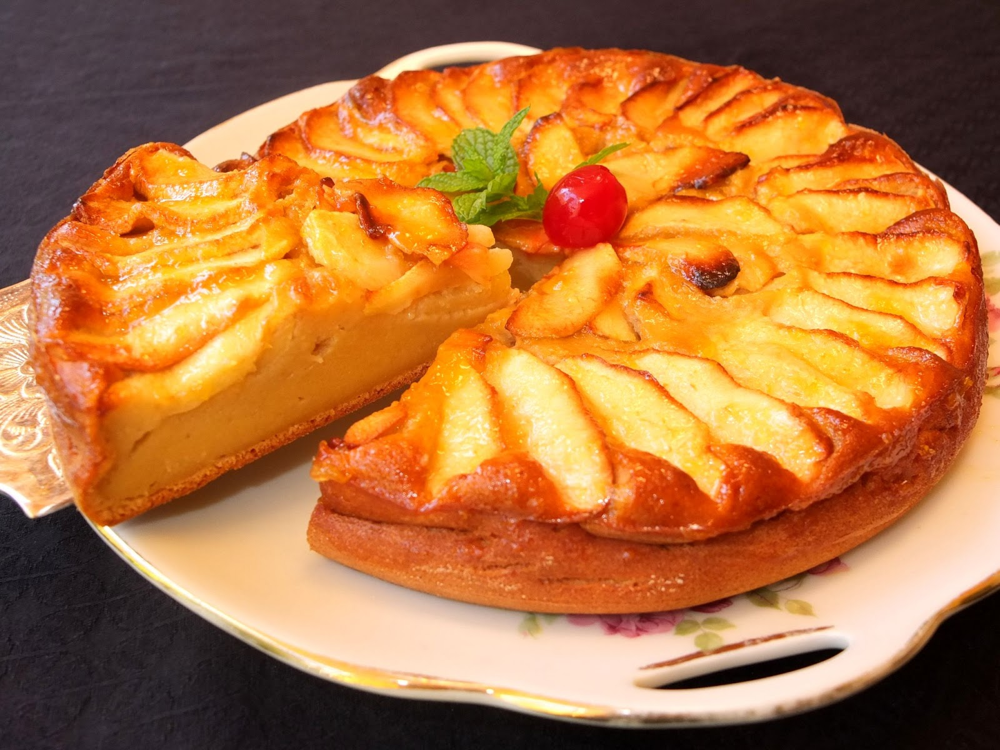

Nombre de la receta : Pastel de Manzana
Descripción: Este delicioso pastel de
manzana es perfecto para cualquier ocasión. Es suave,
esponjoso y lleno de sabor, ideal para acompañar con
un café o té.
Ingredientes :
- 2 manzanas grandes
- 1 taza de harina
- 1/2 taza de azúcar
- 1/2 taza de mantequilla
- 2 huevos
- 1 cucharadita de polvo para hornear
- 1 cucharadita de canela
- 1/4 cucharadita de sal
- 1/2 taza de leche
- 1 cucharadita de esencia de vainilla

Tiempo de preparación: 45 minutos
Porciones: 8
Procedimientos :
- Precalentar el horno a 180°C (350°F).
- Pelar y cortar las manzanas en trozos pequeños.
- En un bol, mezclar la harina, azúcar, polvo para
hornear, canela y sal.
- Agregar la mantequilla derretida, los huevos, la
leche y la esencia de vainilla. Batir hasta obtener
una masa homogénea.
- Incorporar las manzanas a la mezcla.
- Verter la masa en un molde engrasado y hornear durante
30-40 minutos, o hasta que al insertar un palillo,
éste salga limpio.
- Dejar enfriar antes de servir.
Consejos :
- Puedes añadir nueces picadas a la mezcla para darle
un toque crujiente.
- Si prefieres un pastel más dulce, puedes añadir más
azúcar a la masa.
Variantes :
- Pastel de manzana y durazno: Sustituye
una parte de las manzanas por duraznos en rodajas.
- Pastel sin gluten: Usa harina sin gluten
como alternativa a la harina convencional.